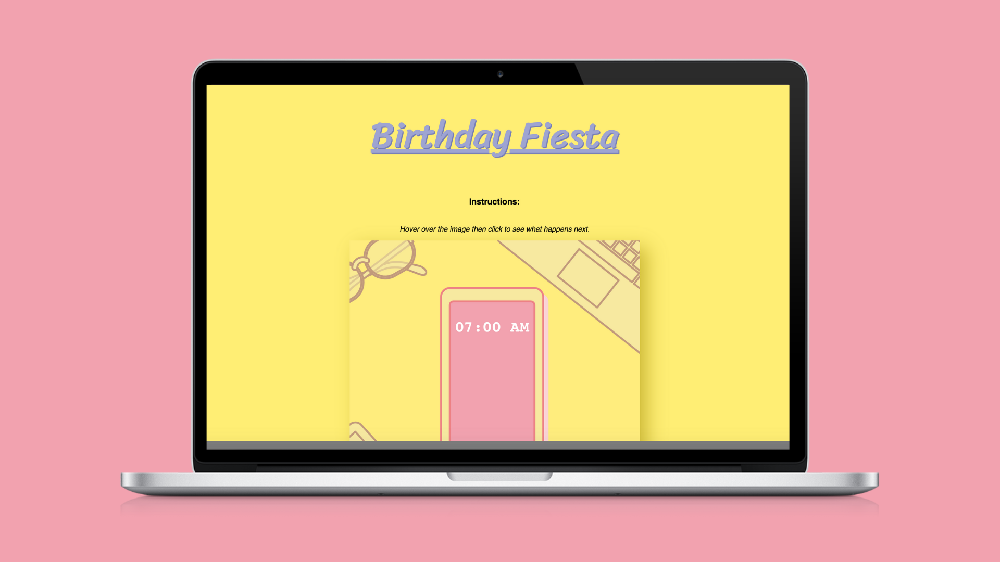

Comic Strip
Storytelling, illustrations, Digital Comics
Birthday Fiesta is a comix strip, made in a group of 4 that hosts original, interactive content on a web page. It uses original content to tell a story by using sequential art to create a digital story on the dynamic space of the web page. This comix strip is an interactive narrative that follows a baking tutorial for a birthday. The theme of the website matches the narrative and therefore, the color palette, the typeface and the illustrations were bright and cartoon-like to build on that happy, celebratory theme. This experience focuses of enhancing the following: Well-written, clear story - Original 2D design work utilizing Photoshop and Illustrator - Comic sensibility - Web interactivity & implementation